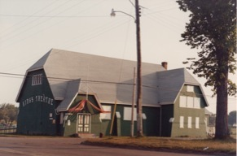

‘A
CAUSES THAT MATTERS”

FUNDS
Unrestricted
Funds
Eric
Robinson Fund
Fund
#1
Thomas
and Katherine
Upson
Fund
Community
Fund
Foundation
Fund
Scholarship
Funds
Joan
Auld Fund
Orin
Carver Scholarship
Fund
Lorne
and Ruby Bonnell
Scholarship
Fund
Lowell
Phillips Scholarship
Fund
Summerside
Natick International
Friendship
Hockey Fund
Admiral
Louise and James C.
Wilmot
Fund
Interest
Funds
Agricultural
Heritage Fund
Dr.
Marlene Bryenton-Ghiz Park Fund
Dr.
Donald K. Taylor Memorial Fund
Glendenning
Family Fund
David
A. MacKay Endowment Fund
Living
Memorial Trust
Souris
Fund
Visual
Arts Fund
Beach
Tennis Club
J.
Melville Campbell Fund
Jessie
Drummond Public Speaking Award
Island
Arts and heritage Fund
J.
Gwynneth Lantz Memorial Fund
Hesta
Mac Donald Legacy Fund
Summer
Islanders Legacy Fund
Cumberland-Rocky
Point WI Legacy
Fund
Agency
Funds
L.M.Montgomery
Land Trust
Indian
River Festival Fund
Managed
Funds
ALS
Society of PEI
Anonymous
Architects
Assn. of PEI
Highfield
Cemetery Trust
Old
Protestant Burying Ground
PEI
4H Trust Fund
Dundas
Cemetery Fund
T.
Arthur Dawson Masonic Fund
C.
Gordon Lord Scholarship Fund
MacMillan-Bagnall
Shrine Trust
Island
Shrine Club
Hospice
Palliative Care Association
YIP
Youth
in Philanthropy
.

The
Community Foundation
of Prince Edward Island

Ten
reasons people choose community foundations.
one
We
are a local
organization
with deep roots in the community, and part of a nationwide movement
whose support we build and share.
two
We
bring donors to the table as community
builders,
working closely with them to align their philanthropic vision with
the community’s needs.
three
We
identify long-term
needs
and opportunities and invest in solutions that let our communities
guide their own future.
four
We
take a broad and inclusive view of what a community is, and provide
grants
to the widest possible range of organizations and initiatives.
five
We
provide highly personal
and flexible service,
accepting a wide variety of assets and offering donors maximum tax
advantage.
six
We
build permanent
funds
and those that can respond to immediate needs, helping our
communities ensure vital futures.
seven
We
multiply
the impact
of gift dollars by pooling them with other gifts.
eight
We
believe that diversity is strength, so we bring
the entire community together
to stimulate new ideas, build participation and strengthen community
philanthropy.
nine
We
are transparent
and reputable stewards
of community resources, committed to being accountable, accessible
and responsive.
ten
We
build community
vitality
– the unique and essential spirit that flourishes when people
believe their community holds possibilities for everyone.
THE
FOUNDATION
The
Community Foundation of PEI is a volunteer driven, registered,
non-profit, charitable organization. Our mission is to improve
quality of life on PEI through the creation and building of
endowment funds that will help ensure vital futures for Island
communities.
The
Community Foundation of PEI provides a means for individuals,
families, community groups, corporations, and private foundations to
support philanthropic activities which invest in sustainable
solutions to community needs. We connect people who care with causes
that matter.
The
Community Foundation of PEI honours the vision and wisdom of donors
and guides disbursements according to their wishes. We facilitate
and simplify donor-directed giving and help establish endowments in
perpetuity.
We
manage trust funds with diligence and transparency and adhere to
conventional reporting practices.
THE
BOARD
Direction
is provided by a 12 person, volunteer, community minded Board of
Directors representing a broad cross-section of life on Prince
Edward Island. Much of the success of the Foundation can be
attributed to the hard work and generosity of the individual
directors.
CURRENT
DIRECTORS
John
Robinson Tom Davies Joyce Gaudet
Tracey
Laughlin Rod Nicholson Stanley
MacDonald
Donald
Glendenning Andrew Daggett James Travers
Rogers
Bell Steve McQuaid Carol Fraser
RECENT
ACHIEVEMENTS
Several
years of annual granting in excess of $60,000 to charitable
organizations and causes
Investment
portfolio over $1,300,000
Developed
a network of Summer
Islanders
interested in giving back to their adopted home;
Application
made by the Indian River Festival was approved by the Canadian
Cultural Investment Fund.
Receipts
acceptable to IRS for US citizens
I
am impressed with the ability of the Foundationto design funds that
reflect both donor interests and community needs – Dr. Thomas Hall
The
Community Foundation of Prince Edward Island
Suite
105, Queen Square Center
119-121
Queen Street
Charlottetown,
PE CIA 4B3
Telephone:
(902) 892-3440; Fax: (902) 892-0880
Email:
cfpei@pei.aibn.com
Web
site: www.cfpei.ca
Registration:
Canada: 890011190 RR0001
USA:
30-005080104 2010-01-25 Year End Report B
of Prince Edward Island
Several years of annual granting in excess of $60,000 to charitable organizations and causes
Investment portfolio over $1,300,000
Developed a network of Summer Islanders interested in giving back to their adopted home;
Application made by the Indian River Festival was approved by the Canadian Cultural Investment Fund.
Receipts acceptable to IRS for US citizens